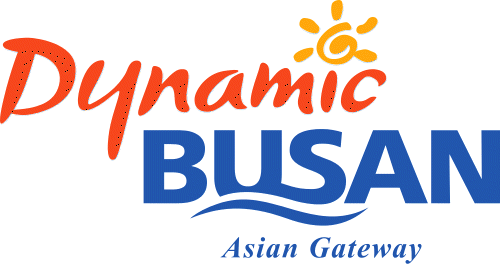

Go the the home!
Travel the Busan!
Introduce the Busan

Busan (Korean pronunciation: [pusan]), formerly Romanized as Pusan and now officially Busan Metropolitan City, is South Korea's second most-populous city after Seoul, with a population of over 3.5 million inhabitants.[3] It is the economic, cultural and educational center of southeastern Korea, with its port—Korea's busiest and the fifth-busiest in the world [a]—only about 120 miles (190 km) from the Japanese islands of Kyushu and Honshu. The surrounding "Southeast Economic Zone" (including Ulsan and South Gyeongsang) is South Korea's largest industrial area.
Busan is divided into 15 major administrative districts and a single county, together housing a population of approximately 3.6 million. The full metropolitan area, including the adjacent cities of Gimhae and Yangsan, has a population of approximately 4.6 million. The most densely built-up areas of the city are situated in a number of narrow valleys between the Nakdong and the Suyeong Rivers, with mountains separating most of the districts. The Nakdong is Korea's longest river and Busan's Haeundae Beach is also the country's largest.
Busan is a center for international conventions, hosting APEC in 2005. It is also a center for sports tournaments in Korea, having hosted the 2002 Asian Games and FIFA World Cup. It is home to the world's largest department store, the Shinsegae Centum City.[5] Busan was added to the UNESCO Creative Cities Network as a "City of Film" in December 2014.[6]
Select the place where you want to see in Busan
- Haeundae
- Gwanganri
- International market
- Gamcheon Culture Village
- Samrak Park